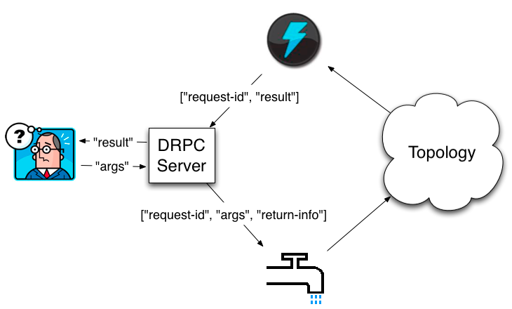

The idea behind distributed RPC (DRPC) is to parallelize the computation of really intense functions on the fly using Storm. The Storm topology takes in as input a stream of function arguments, and it emits an output stream of the results for each of those function calls.
DRPC is not so much a feature of Storm as it is a pattern expressed from Storm's primitives of streams, spouts, bolts, and topologies. DRPC could have been packaged as a separate library from Storm, but it's so useful that it's bundled with Storm.
Distributed RPC is coordinated by a "DRPC server" (Storm comes packaged with an implementation of this). The DRPC server coordinates receiving an RPC request, sending the request to the Storm topology, receiving the results from the Storm topology, and sending the results back to the waiting client. From a client's perspective, a distributed RPC call looks just like a regular RPC call. For example, here's how a client would compute the results for the "reach" function with the argument "http://twitter.com":
Config conf = new Config();
conf.put("storm.thrift.transport", "org.apache.storm.security.auth.plain.PlainSaslTransportPlugin");
conf.put(Config.STORM_NIMBUS_RETRY_TIMES, 3);
conf.put(Config.STORM_NIMBUS_RETRY_INTERVAL, 10);
conf.put(Config.STORM_NIMBUS_RETRY_INTERVAL_CEILING, 20);
DRPCClient client = new DRPCClient(conf, "drpc-host", 3772);
String result = client.execute("reach", "http://twitter.com");
or if you just want to use a preconfigured client you can call. The exact host will be selected randomly from the configured set of hosts, if the host appears to be down it will loop through all configured hosts looking for one that works.
DRPCClient client = DRPCClient.getConfiguredClient(conf);
String result = client.execute("reach", "http://twitter.com");
The distributed RPC workflow looks like this:

A client sends the DRPC server the name of the function to execute and the arguments to that function. The topology implementing that function uses a DRPCSpout to receive a function invocation stream from the DRPC server. Each function invocation is tagged with a unique id by the DRPC server. The topology then computes the result and at the end of the topology a bolt called ReturnResults connects to the DRPC server and gives it the result for the function invocation id. The DRPC server then uses the id to match up that result with which client is waiting, unblocks the waiting client, and sends it the result.
Storm comes with a topology builder called LinearDRPCTopologyBuilder that automates almost all the steps involved for doing DRPC. These include:
Let's look at a simple example. Here's the implementation of a DRPC topology that returns its input argument with a "!" appended:
public static class ExclaimBolt extends BaseBasicBolt {
public void execute(Tuple tuple, BasicOutputCollector collector) {
String input = tuple.getString(1);
collector.emit(new Values(tuple.getValue(0), input + "!"));
}
public void declareOutputFields(OutputFieldsDeclarer declarer) {
declarer.declare(new Fields("id", "result"));
}
}
public static void main(String[] args) throws Exception {
LinearDRPCTopologyBuilder builder = new LinearDRPCTopologyBuilder("exclamation");
builder.addBolt(new ExclaimBolt(), 3);
// ...
}
As you can see, there's very little to it. When creating the LinearDRPCTopologyBuilder, you tell it the name of the DRPC function for the topology. A single DRPC server can coordinate many functions, and the function name distinguishes the functions from one another. The first bolt you declare will take in as input 2-tuples, where the first field is the request id and the second field is the arguments for that request. LinearDRPCTopologyBuilder expects the last bolt to emit an output stream containing 2-tuples of the form [id, result]. Finally, all intermediate tuples must contain the request id as the first field.
In this example, ExclaimBolt simply appends a "!" to the second field of the tuple. LinearDRPCTopologyBuilder handles the rest of the coordination of connecting to the DRPC server and sending results back.
In the past to use DRPC in local mode it took creating a special LocalDRPC instance. This can still be used when writing tests for your code, but in the current version of storm when you run in local mode a LocalDRPC instance is also created, and any DRPCClient created will link to it instead of the outside world. This means that any interaction you want to test needs to be a part of the script that launches the topology, just like with LocalDRPC.
Using DRPC on an actual cluster is also straightforward. There's three steps:
Launching a DRPC server can be done with the storm script and is just like launching Nimbus or the UI:
bin/storm drpc
Next, you need to configure your Storm cluster to know the locations of the DRPC server(s). This is how DRPCSpout knows from where to read function invocations. This can be done through the storm.yaml file or the topology configurations. You should also specify storm.thrift.transport property to match DRPCClient settings. Configuring this through the storm.yaml looks something like this:
drpc.servers:
- "drpc1.foo.com"
- "drpc2.foo.com"
drpc.http.port: 8081
storm.thrift.transport: "org.apache.storm.security.auth.plain.PlainSaslTransportPlugin"
Finally, you launch DRPC topologies using StormSubmitter just like you launch any other topology. To run the above example in remote mode, you do something like this:
StormSubmitter.submitTopology("exclamation-drpc", conf, builder.createRemoteTopology());
createRemoteTopology is used to create topologies suitable for Storm clusters.
Assuming that the topology is listening on the exclaim function you can execute something several differnt ways.
Programatically:
java
Config conf = new Config();
try (DRPCClient drpc = DRPCClient.getConfiguredClient(conf)) {
//User the drpc client
String result = drpc.execute("exclaim", "argument");
}
through curl:
curl http://hostname:8081/drpc/exclaim/argument
Through the command line:
bin/storm drpc-client exclaim argument
The exclamation DRPC example was a toy example for illustrating the concepts of DRPC. Let's look at a more complex example which really needs the parallelism a Storm cluster provides for computing the DRPC function. The example we'll look at is computing the reach of a URL on Twitter.
The reach of a URL is the number of unique people exposed to a URL on Twitter. To compute reach, you need to:
A single reach computation can involve thousands of database calls and tens of millions of follower records during the computation. It's a really, really intense computation. As you're about to see, implementing this function on top of Storm is dead simple. On a single machine, reach can take minutes to compute; on a Storm cluster, you can compute reach for even the hardest URLs in a couple seconds.
A sample reach topology is defined in storm-starter here. Here's how you define the reach topology:
LinearDRPCTopologyBuilder builder = new LinearDRPCTopologyBuilder("reach");
builder.addBolt(new GetTweeters(), 3);
builder.addBolt(new GetFollowers(), 12)
.shuffleGrouping();
builder.addBolt(new PartialUniquer(), 6)
.fieldsGrouping(new Fields("id", "follower"));
builder.addBolt(new CountAggregator(), 2)
.fieldsGrouping(new Fields("id"));
The topology executes as four steps:
GetTweeters gets the users who tweeted the URL. It transforms an input stream of [id, url] into an output stream of [id, tweeter]. Each url tuple will map to many tweeter tuples.GetFollowers gets the followers for the tweeters. It transforms an input stream of [id, tweeter] into an output stream of [id, follower]. Across all the tasks, there may of course be duplication of follower tuples when someone follows multiple people who tweeted the same URL.PartialUniquer groups the followers stream by the follower id. This has the effect of the same follower going to the same task. So each task of PartialUniquer will receive mutually independent sets of followers. Once PartialUniquer receives all the follower tuples directed at it for the request id, it emits the unique count of its subset of followers.CountAggregator receives the partial counts from each of the PartialUniquer tasks and sums them up to complete the reach computation.Let's take a look at the PartialUniquer bolt:
public class PartialUniquer extends BaseBatchBolt {
BatchOutputCollector _collector;
Object _id;
Set<String> _followers = new HashSet<String>();
@Override
public void prepare(Map conf, TopologyContext context, BatchOutputCollector collector, Object id) {
_collector = collector;
_id = id;
}
@Override
public void execute(Tuple tuple) {
_followers.add(tuple.getString(1));
}
@Override
public void finishBatch() {
_collector.emit(new Values(_id, _followers.size()));
}
@Override
public void declareOutputFields(OutputFieldsDeclarer declarer) {
declarer.declare(new Fields("id", "partial-count"));
}
}
PartialUniquer implements IBatchBolt by extending BaseBatchBolt. A batch bolt provides a first class API to processing a batch of tuples as a concrete unit. A new instance of the batch bolt is created for each request id, and Storm takes care of cleaning up the instances when appropriate.
When PartialUniquer receives a follower tuple in the execute method, it adds it to the set for the request id in an internal HashSet.
Batch bolts provide the finishBatch method which is called after all the tuples for this batch targeted at this task have been processed. In the callback, PartialUniquer emits a single tuple containing the unique count for its subset of follower ids.
Under the hood, CoordinatedBolt is used to detect when a given bolt has received all of the tuples for any given request id. CoordinatedBolt makes use of direct streams to manage this coordination.
The rest of the topology should be self-explanatory. As you can see, every single step of the reach computation is done in parallel, and defining the DRPC topology was extremely simple.
LinearDRPCTopologyBuilder only handles "linear" DRPC topologies, where the computation is expressed as a sequence of steps (like reach). It's not hard to imagine functions that would require a more complicated topology with branching and merging of the bolts. For now, to do this you'll need to drop down into using CoordinatedBolt directly. Be sure to talk about your use case for non-linear DRPC topologies on the mailing list to inform the construction of more general abstractions for DRPC topologies.
CoordinatedBolt directly